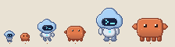
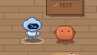
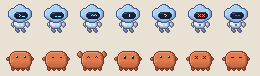
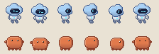
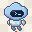
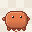

Character Design Sheet
32×32 캔버스(제작 크기), 발 사이 바닥 중앙이 기준점(주황 점). 모든 크기는 같은 형태 계획에서 다시 그렸다(확대·축소 아님). 왼쪽 위 광원, 검정 외곽선 대신 형태 색의 어두운 색조.
크기 비교 — 16 / 32 / 48 (×4)

16은 표정이 2픽셀로 줄어 상태 반응을 읽기 어렵다. 48은 방(480×270) 안에서 가구 대비 너무 크다. 32를 채택하고, 48은 Inspector 초상용 후보로만 둔다.
실제 GUI 표시 크기 (방 안, ×2 = 화면 100%)

선택 표시는 발밑 점선 고리 하나(과한 테두리·화살표 없음).
표정 (×5): neutral, blink, happy, attention, unknown, fail, rest

Codex는 얼굴 화면의 기호, Claude는 눈 모양·팔 자세로 표현한다. fail은 검증 장치를 보고 놀라는 반응용이며
"이 펫이 실패했다"는 뜻으로 쓰지 않는다(실패의 주체는 검증 장치). rest는 휴식 장식.
방향·프레임 (×5): 정면 · 호흡 · 측면 · 걷기 · 측면 호흡 · 깜빡임

32×32 캔버스 (×10)


팔레트
Codex
cloudcloud_rimscreenscreen_rimglyphglyph_dimbodybody_rimjointlampwarnbad
Claude
bodyrimlegeyesparkblush
유지·변경
| 유지 (TUI 정체성) | 바뀐 것 | |
|---|---|---|
| Codex | 파란 구름 머리, 남색 화면 얼굴, >_ | 12×12 → 32×32, 3단 명암, 흰 몸통과 가슴 램프, 화면 기호로 표정 |
| Claude | 주황 크리터, 옆으로 뻗은 팔, 짧은 다리 | 14×7 → 32×32(실제 몸 26×19), 둥근 모서리, 세로 눈, 볼 터치, 팔 자세로 감정 |